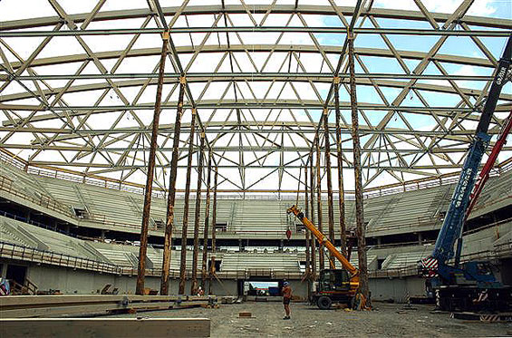
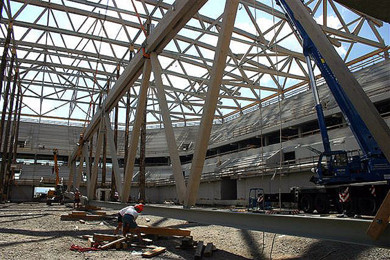

|
|
|
| Arenanews SAP Arena, Mannheim |
 |
|
Wenn
am Sonntag, den 22. Januar, die Adler Mannheim den ERC Ingolstadt zum DEL-Spiel
empfangen, erwartet die Mannheimer SAP Arena ihren 500.000sten Zuschauer.
Die Arena wurde am 2. September 2005 mit einer Eröffnungsgala eingeweiht,
seitdem fanden hier bereits 58 Veranstaltungen statt, die im Durchschnitt
8.621 Zuschauer sahen. Fast die Hälfte der Arena-Besucher konnten die Adler
Mannheim bei ihren DEL-Heimspielen begrüßen, zu den bisher 22 Spielen in
der Multifunktionsarena kamen 239.633 Eishockey-Fans (Schnitt: 10.892 Zuschauer).
Aber auch die Handballer der Rhein-Neckar-Löwen alias SG Kronau/Östringen
erleben in Mannheim einen Aufschwung. Seit dem Umzug ins städtische Umfeld
konnten sie in neun Heimspielen über 65.000 Zuschauer begrüßen und sich in
der Zuschauertabelle der Handball-Bundesliga hinter Gummersbach und Kiel
auf Platz 3 der Handball-Bundesliga etablieren (siehe auch Stadionwelt-Magazin
Nr. 16 / Erscheinungsdatum 1.2.06).
Neben dem Sport dient die Mannheimer Arena auch als Schauplatz für Show-Events,
so traten hier unter anderem schon Ronan Keating und David Copperfield auf.
SAP Arena-Geschäftsführer Daniel Hopp freut sich über den Zuspruch: "Wir
freuen uns, dass wir bereits nach knapp fünf Monaten die 500.000er-Grenze
überschreiten können. Unserem selbstgesteckten Ziel, im ersten Jahr eine
Million Zuschauer zu begrüßen, kommen wir somit immer näher." (Stadionwelt)

Bild: Stadionwelt
| | |
Nachdem
in der vergangenen Woche bereits die künftigen Heimteams der SAP ARENA, das
DEL-Team der Adler Mannheim und der Handball-Bundesligist Rhein-Neckar Löwen,
im Rahmen von Freundschaftsspielen ihre neue Spielstätte beschnuppern durften,
wird die Halle nun auch offiziell eröffnet. Am Abend des 2. September begrüßen
zunächst die obligatorischen Politiker und Würdenträger, anschließend Musiker
und Sänger des Nationaltheaters Mannheim die Zuschauer. Diese werden sich
ab sofort auch auf dem Oberrang tummeln dürfen, der bei beiden Vorpremiere-Veranstaltungen
noch gesperrt war. Höhepunkt des Abends wird ein komplettes Konzert des irischen
Musikstar Ronan Keating sein, der somit die Ehre hat, mit dem ersten großen
Musik-Act die Multifunktionalität der Arena auf die Probe zu stellen. (Stadionwelt,
02.09.2005)
| | |
Restlos
ausverkauft war die SAP Arena beim ihrem ersten Handballspiel, einer 18:28-Niederlage
der Rhein-Neckar Löwen in einem Testspiel gegen den VfL Gummersbach. Da der
Oberrang noch nicht freigegeben war, konnten nur 6.000 Zuschauer in die Halle
gelassen werden. Tausende zogen daher unverrichteter Dinge wieder ab.
Obwohl den Verein an der Situation keine Schuld traf – über die Sperrung
des Oberrangs war im Vorfeld ausführlich berichtet worden – bietet der Club
als Entschädigung für die ersten beiden Bundesligaspiele ermäßigte Karten
im dann auch nutzbaren Oberrang an. (Stadionwelt, 26.08.2005)
| | |
Noch
vor der offiziellen Eröffnung der SAP-Arena, die am 2. September unter anderem
mit einem Konzert von Ronan Keating erfolgen wird, finden zwei Testspiele
in der neuen Multifunktionshalle statt. Am Sonntag, dem 21. August, um 15:00
Uhr spielen die Adler Mannheim ein Eishockey-Testspiel gegen die Kölner Haie.
Doch nur Inhaber einer Dauerkarte der Adler können dieses Spiel, bei dem
lediglich der Unterrang und damit 5.000 Plätze zur Verfügung stehen, besuchen.
Ausgenommen von dieser Regelung sind lediglich 100 Gästefans, denen ebenfalls
der Zutritt gestattet werden soll.
Drei Tage später, wird dann auch das
andere Heimteam der Arena seine Premiere in der neuen Heimat feiern. Der
Aufsteiger in die Handball-Bundesliga SG Kronau/Östringen, der ab der kommenden
Saison unter dem Beinamen Rhein-Neckar-Löwen firmieren wird, testet am Mittwoch,
dem 24. August um 17:00 Uhr gegen den VfL Gummersbach Form und neue Spielstätte.
(Stadionwelt, 19.08.2005)

Bild: Werbeagentur Janus - www.janus-wa.de
| | |
Der
Gang zum Getränkestand dürfte in der Mannheimer SAP-Arena weniger riskant
werden als in den meisten anderen Sporthallen. Denn weil das gesamte Gebäude
derzeit mit Flachbildschirmen ausgestattet wird, kann man künftig auch außerhalb
der Tribünen das Spielgeschehen verfolgen, somit läuft man nicht Gefahr,
die spielentscheidende Aktion zu verpassen. 3 Kameras in der Halle produzieren
das Signal, 200 Flatscreens übertragen die Aktionen live in alle Winkel der
Halle. Erstmals wird die neue Technik beim Probelauf der SAP-Arena, einem
Testspiel der Adler Mannheim gegen die Kölner Haie am 21. August, zum Einsatz
kommen. (Stadionwelt, 12.07.2005)
| | |
Mit
der Rückkehr der SG Kronau/Östringen in die Handball-Bundesliga steht nun
fest, dass die SAP Arena wie angestrebt mit zwei Hometeams in ihre erste
Saison gehen wird. Der Aufsteiger trägt in Zukunft alle seine Pflichtspiele
in der neuen Arena im Mannheimer Bösfeld aus.
Gegenüber Stadionwelt äußerte sich Uli Schuppler, Geschäftsführer der
SG Kronau/Östringen: "Parallel zum sportlichen Erfolg haben wir natürlich
unsere Infrastruktur weiter optimiert und Sponsoren dazu gewonnen. Unsere
Region ist absolut handballbegeistert und fiebert der 1. Bundesliga entgegen.
Im September 2005 wird die SAP Arena eröffnet, die Planungen für den Umzug
laufen schon seit Monaten auf Hochtouren. Jetzt sind wir nahezu fertig. Mit
der SAP Arena als künftige Austragungsstätte unserer Heimspiele können wir
mit den großen Hallen der Liga mithalten. Alles ist bereit für die 1. Bundesliga."
Vor der offiziellen Eröffnung am ersten September-Wochenende soll Ende
August, kurz nach dem ersten Testspiel des DEL-Klubs Adler Mannheim gegen
die Kölner Haie, das erste Spiel der SG Kronau/Östringen in der neuen Multifunktionshalle
stattfinden, um vor Beginn der neuen Saison den Handballbetrieb zu testen.
(Stadionwelt, 30.05.2005)
Bild: Werbeagentur Janus - www.janus-wa.de
| | |
Bis
Mitte Juni sollen die größeren Arbeiten an der Mannheimer SAP ARENA abgeschlossen
sein, damit die neue Heimstätte des DEL-Klubs Adler Mannheim in den folgenden
Wochen bis zur offiziellen Eröffnung am 2. September einen ausgiebigen Probelauf
durchlaufen kann.
Im Zuschauerraum der SAP ARENA sind mittlerweile rund drei Viertel der
gepolsterten Klappsitze montiert und die Module der vier je 16,86 Quadratmeter
großen Anzeigetafeln des etwa 15 Tonnen schweren Videowürfels angebracht.
In den Umläufen hinter den Tribünen und in den Gastronomiebereichen stehen
die Arbeiten kurz vor der Fertigstellung.
Exakt 100 Tage vor der Eröffnung wurde am Mittwoch die Roadshow „100
Tage on the road“ gestartet, die in den folgenden knapp drei Monaten bei
Veranstaltungen und Ereignissen die Bürger in der Rhein-Neckar Region über
den Neubau informieren soll. Nach Angaben der Adler sind bis zum jetzigen
Zeitpunkt bereits 4.000 Dauerkarten für die neue Saison abgesetzt, was einer
Steigerung um ein Drittel gegenüber der letzten Saison im Eisstadion am Friedrichspark
entspricht.
| | |
Knapp
fünf Monate vor der offiziellen Eröffnung am ersten September-Wochenende
gehen die Arbeiten in der Mannheimer SAP ARENA ihrem Ende entgegen.
Inzwischen sind Fassade und Dach komplett fertig gestellt, und im Inneren
sind die Rohmontage der Haustechnik sowie die Betonierung der Eisplatte abgeschlossen.
Ebenfalls vollständig eingerichtet ist eine Muster-Loge inklusive der davor
liegenden Tribünenplätze.
In diesen Tagen wurde mit der Montage der Geländer im Zuschauerraum
und dem Ausbau der Catering-Bereiche begonnen. Des Weiteren sind die Tribünenstufen,
auf denen voraussichtlich ab Mai die gepolsterten Klappsitze installiert
werden bereits beschichtet, bereits beschichtet. Im gleichen Monat soll ebenfalls
der große Videowürfel mittig über der zukünftigen Eisfläche angebracht werden.

Bild: Werbeagentur Janus - www.janus-wa.de

Bild: Werbeagentur Janus - www.janus-wa.de
| | |
Über
zwei Tage werden sich die Eröffnungsfeierlichkeiten der Mannheimer SAP ARENA
erstrecken. Am Freitag, den 2. September 2005, gibt es zunächst einen großen
Festakt mit der feierlichen Übergabe des Gebäudes, in dessen Anschluss Ronan
Keating als erster Solokünstler in der neuen Multifunktionsarena auftritt.
Der darauf folgende Tag steht dann ganz im Zeichen der Region Rhein-Neckar,
denn der Mannheimer Sänger Rolf Stahlhofen sowie zahlreiche Künstler aus
Mannheim und Umgebung, wie zum Beispiel die Söhne Mannheims, Sasha, Peter
Maffay und Badesalz konnten gewonnen werden.
Einen ersten Test der Adler Mannheim gegen die Kölner Haie wird es bereits
zuvor am 21. August 2005 in der Halle geben. Bei diesem Spiel stehen jedoch
nur der Unterrang und somit maximal 5.000 Plätze zur Verfügung. Am 6. September
findet dann das erste Spiel des DEL-Klubs in der fertig gestellten und freigegebenen
SAP ARENA statt. Gegner ist an diesem Tag ein „DEL-Dream-Team“ bestehend
aus je zwei Topspielern von jedem DEL-Team.

Bild: Werbeagentur Janus - www.janus-wa.de
| | |
Die
neue Mannheimer Arena trägt künftig den Namen „SAP-Arena“. Einen entsprechenden
Vertrag mit zehnjähriger Laufzeit unterzeichneten die „Arena Mannheim Besitzgesellschaft
mbH“ und das Software-Unternehmen. Neben den Namensrechten erhält SAP die
Option, die Arena mit bis zu zwei Großveranstaltungen pro Jahr zu belegen.
Vertieft wird die Partnerschaft zudem durch die Zusammenarbeit im Planungsausschuss
der Arena.
Daniel Hopp, Geschäftsführer der Arena-Betriebsgesellschaft: „Wir werden
vom weltweit enorm positiven Image der SAP stark profitieren. Diese Konstellation
erfüllt uns mit großem Stolz. Die SAP dokumentiert darüber hinaus mit diesem
Sponsorship erneut ihre regionale Verbundenheit. Gleichermaßen hilft sie
somit aber auch der Arena für den gewünschten Aufwind im internationalen
Arenenvergleich.“
Von den beträchtlichen Baufortschritten der SAP-Arena, die Außenfassade
und das Dach sind nahezu fertiggestellt, können sich am morgigen Samstag
die Fans der Adler Mannheim und alle sonstigen Besucher der ersten offiziellen
Großveranstaltung in der Multifunktionshalle überzeugen. Bei der sogenannten
Blauhelmparty, deren Name auch Motto ist, da jeder Besucher einen eigens
für diesen Event gefertigten blauen Bauhelm mit dem Logo der Adler tragen
wird, bekommen die Fans einen ersten Eindruck der neuen Spielstätte des Mannheimer
DEL-Klubs. Das Fest beginnt um 15.00 Uhr und bietet ein vierstündiges Programm
mit Live-Musik, Comedy, Gewinnspielen, den Mannheimer Adlern und den Handballern
der SG Kronau/Östringen im Innenraum der SAP-Arena.
| | |
Bis
zum 6. August soll die Dachkonstruktion fertig gestellt sein, um sie anschließend
auf die vorgesehene Trägerfläche abzusenken. Danach kann mit der Dachplattenmontage
begonnen werden.
Auch sonst bewegt sich der Baufortschritt exakt im Zeitplan. Seit dem
Baubeginn im Juli 2003 wurden die Fassadenarbeiten zu 60 Prozent und die
Maurerarbeiten in der Halle zu 90 Prozent abgeschlossen. Die Stadt Mannheim
hat inzwischen begonnen, die nötige Infrastruktur zu errichten. Neben den
Straßen rund um die Halle wird auch der Straßenbahn-Anschluss ausgebaut.
Insgesamt belaufen sich die Baukosten der Mannheim Arena auf 82 Millionen
Euro. Hier können künftig bis zu 13.600 Besucher die Eishockey-Spiele der
Adler Mannheim verfolgen. Das Interesse der Fans ist immens. Mehr als 1.400
sicherten sich bereits ein Zertifikat für einen Platz in der Arena, indem
sie bereits eine Anzahlung für die künftige Dauerkarte leisteten.
Erfolge gibt es auch bei der Vermarktung der 42 Logen, von denen 28
bereits verkauft wurden. Eine hohe Nachfrage ist zudem bei den Business-Seats
zu verzeichnen. „Es gibt ein sehr großes Interesse und wir gehen davon aus,
dass auch dieses Angebot bis zum Beginn der Saison 05/06 erschöpft sein wird“,
zeigt sich Mathias Fries, Pressesprecher der Adler Mannheim, überzeugt.
Ab September 2005 spielt der Klub in der neuen Halle.

Bild: Janus WA

Bild: Janus WA

Bild: Janus WA
| | |
Die
SG Kronau/Östringen, Aufsteiger in die erste Handball-Bundesliga und derzeit
auf einem Abstiegsplatz, plant seine Zukunft mit der neuen Arena in Mannheim.
Der Verein gab am Montag einen Katalog von Maßnahmen bekannt, mit denen man
"in den nächsten Jahren einen Platz unter den ,Top 6' im deutschen Handballgeschehen"
anstreben will. Neben Umstrukturierungen im Management und einem Nachwuchsförderungskonzept
ist die Partnerschaft mit der Arena ein Eckpfeiler des Plans: "Ab der übernächsten
Saison 2005/06 werden alle Heimspiele der SG Kronau/Östringen in der Mannheim-Arena
ausgetragen. Die Kröstis sind dann zweites ,Hometeam' neben dem Eishockey-Bundesligisten
Adler Mannheim", so die Veröffentlichung des Vereins.
Die Spielgemeinschaft Kronau/Östringen, kurz "Kröstis" genannt, steht
im aktuellen Stadionwelt-Magazin mit einem durschnittlichen Zuschauerzuspruch
von gut 2.900 auf Platz 88 der deutschen Zuschauer-Top 100. Die Rhein-Neckar-Halle
in Eppelheim, bis zum Umzug weiterhin Heimspielort, bietet 4.000 Besuchern
Platz und gilt in Handballkreisen als "Hexenkessel".
| | |
Alle
juristischen Vorbehalte gegen den Bau der Mannheim Arena sind ausgeräumt.
Die Bürgergemeinschaft Mühlfeld hat alle Klagen sowie den Widerspruch gegen
die Baugenehmigung der Nebenanlagen zurück genommen.
| | |
Passend
zur Grundsteinlegung am Montag hat der Verwaltungsgerichtshof Baden-Württemberg
den Bebauungsplan für die Mannheim Arena gebilligt und die Klage von Anwohnern
gegen den Bau der Multifunktionshalle zurück gewiesen.
Diese hatten unzumutbare
Lärmbelästigungen im Rahmen der Großveranstaltungen befürchtet und mangelnde
Umweltschutzmaßnahmen kritisiert. Beide Anträge wies das Gericht als unbegründet
zurück, da alle privaten und öffentlichen Belange ordnungsgemäß abgewogen
und Lärmschutzmaßnahmen vorgesehen seien. Damit ist der Weg endgültig frei
für das 75 Millionen Euro teure Großprojekt, mit dessen Bau bereits im Juli
begonnen wurde.
Das Gerichtsurteil erfolgte unmittelbar vor der für gestern angesetzten feierlichen
Grundsteinlegung, an der 200 geladene Gäste aus Wirtschaft, Sport und Politik
teilnahmen.
Im Beisein von Mannheims Oberbürgermeister Gerhard Widder sowie den Investoren
Dietmar und Daniel Hopp wurde eine Schatulle mit aktuellen Tageszeitungen,
dem Arena-Vertrag, einem Schal der Adler Mannheim sowie zahlreichen weiteren
Utensilien in den Grundstein eingemauert.
Im September 2005 soll die Arena eröffnet werden.
| | |
Noch
sind es knapp zwei Jahre, bis die Mannheim Arena ihre Tore öffnet, der Internetstart
erfolgte jedoch bereits am vergangenen Wochenende.
Unter www.mannheim-arena.de
finden sich zahlreiche Informationen, Daten und Skizzen zum Neubau der Multifunktionshalle.
Darüber hinaus informiert ein Bautagebuch ab sofort monatlich mit aktuellen
Fotos über den Stand der Dinge auf der Baustelle.
Bis zu 15.000 Zuschauer
fasst die Arena nach ihrer Fertigstellung. Neben Konzerten, Messen und Kulturveranstaltungen
wird dort in erster Linie Eishockey-Bundesligist Adler Mannheim seine Heimspiele
austragen.
| |
|
Sie können gerne Arena-News mit Angabe der Quelle bei uns einsenden.
Beachten Sie auch unser Arenaforum mit vielen Neuigkeiten, Informationen und Meinungen zu Themen rund um die Arenen.
|
|
|
|
|